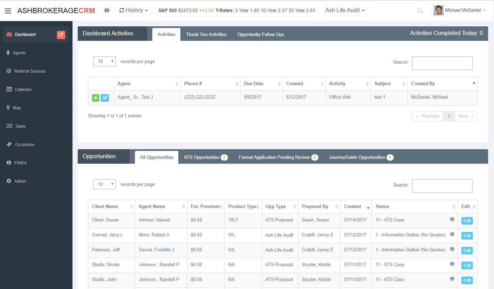
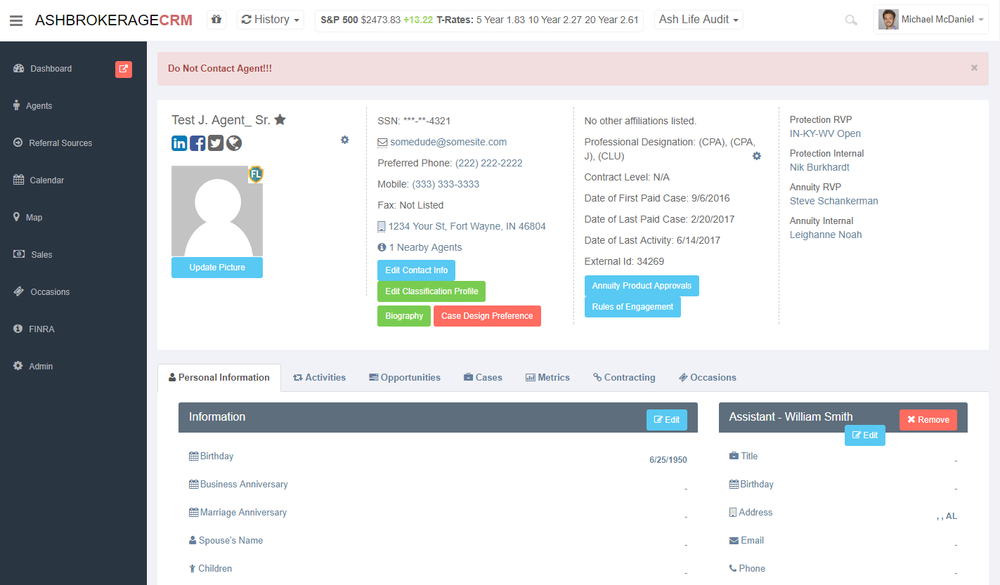
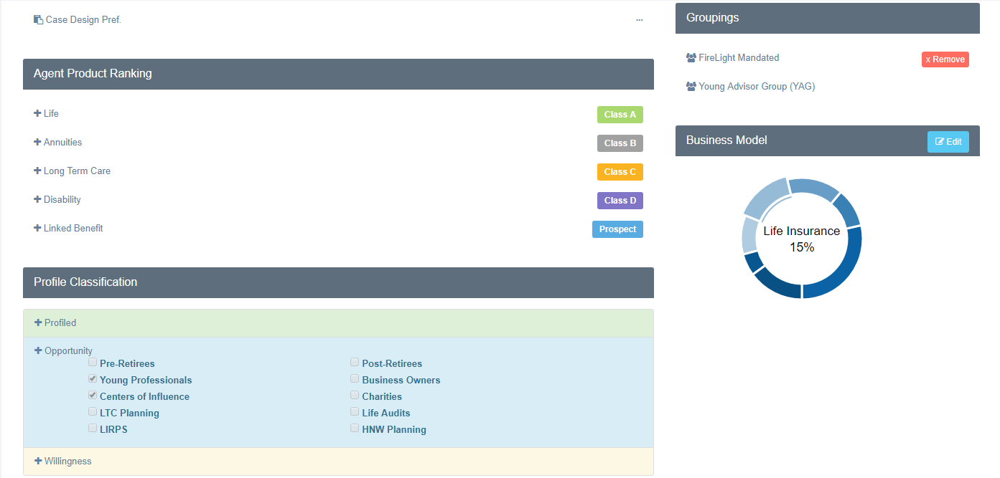
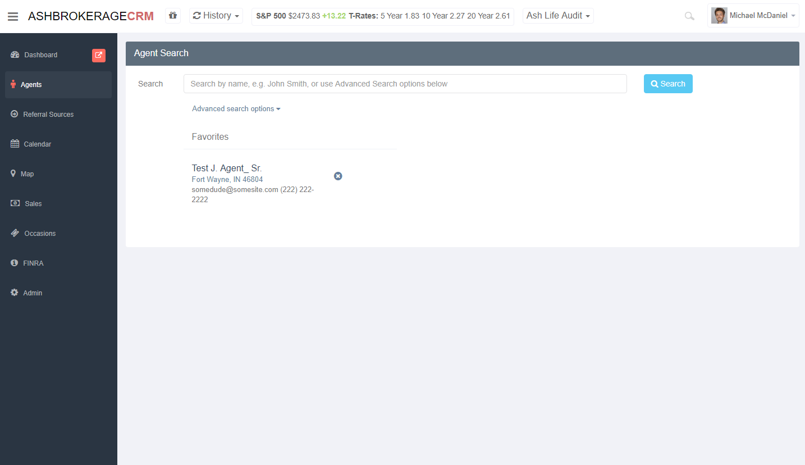
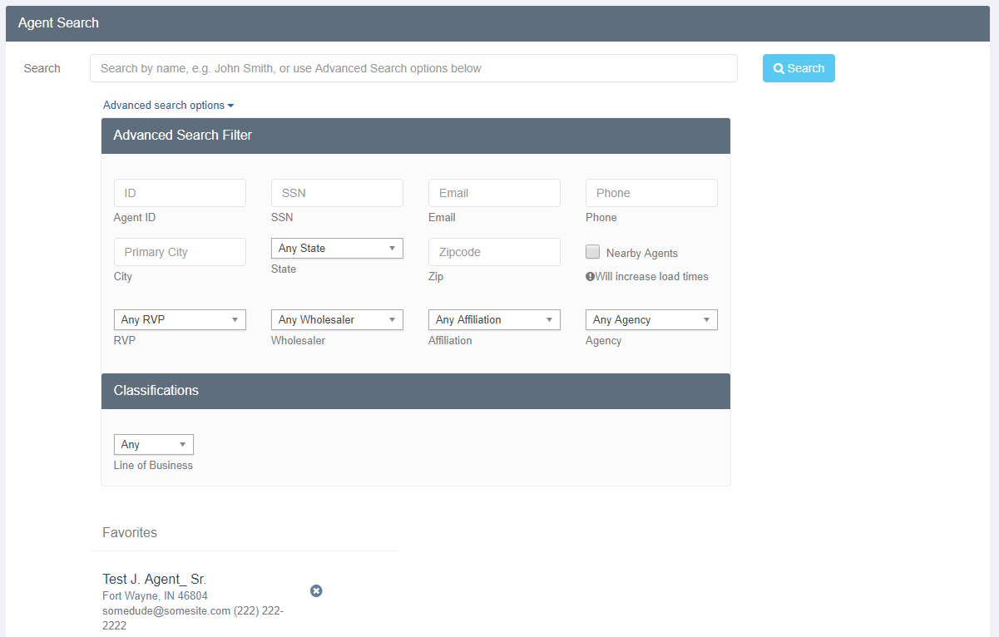
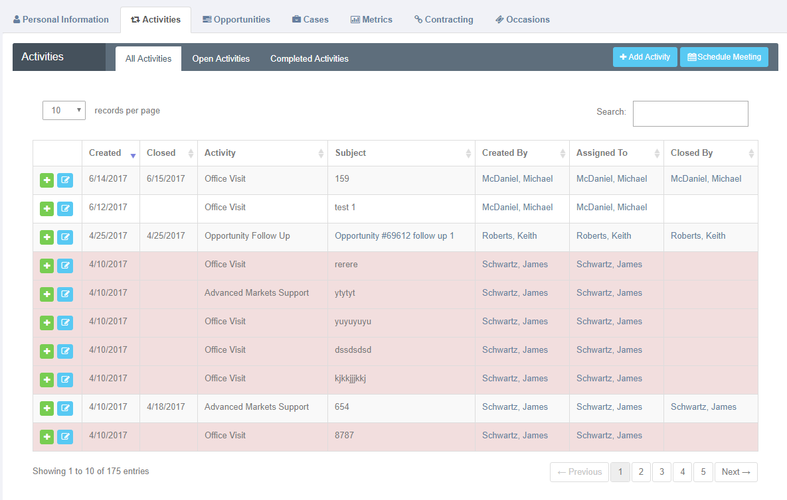
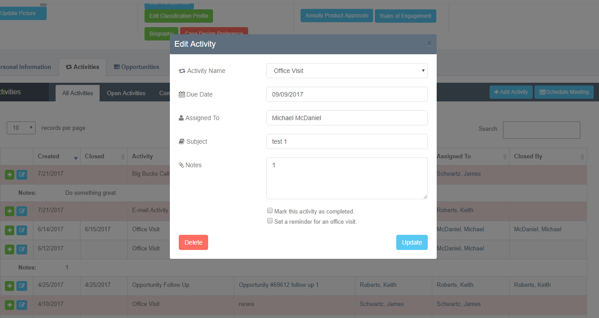
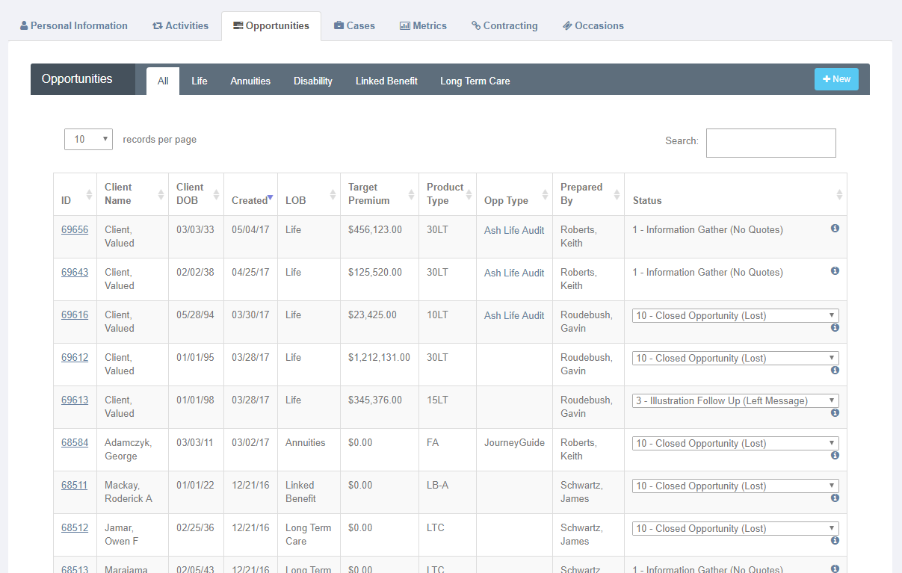

For the past two summers, 2016 and 2017, I was hired onto the development team at Ash Brokerage as an / Application Development Intern. This was the first development job that I had was quite nervous to accept the position as I knew very little about programming, and I mean very little. I had barely touched a text editor and my expiernce was that of basic html and css 'web sites'. However, as most will have guessed, just because you start with nothing does not mean you won't achieve anything. I was determined to learn everthing I could about ASP.NET and C# and tried my very best to contribute to as much as I could. With determination, the will to learn, and a good mentor I believe that anyone can excel at programming.
After that first summer, I was lucky enough to be invited back the next summer, I couldn't refuse that offer and came back to continue to build out the inhouse CRM that Ash had been building. Due to a year of programming during my second year at IU, I was able to immediately start contributing on a higher level than I could my first summer and contributed to alot of the projects, I took some screen shots of some of the main pages that I was tasked to build (I am pretty sure I can't get in trouble for those pics...). My time at Ash has been a huge jump in my programming career and I couldn't be more thankful to the dev team as they have taught me so much these past two years!







